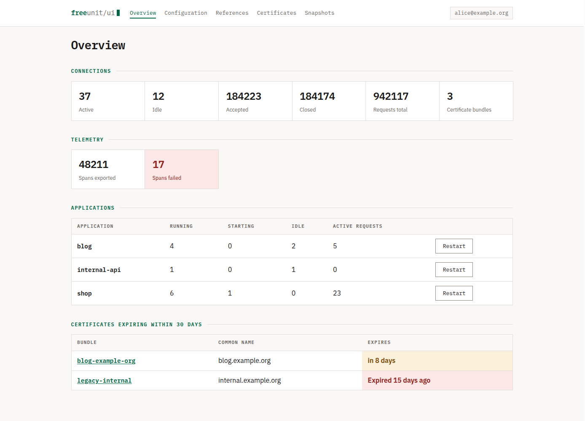
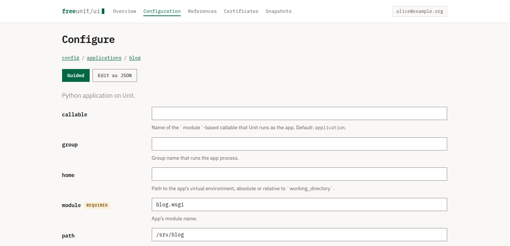
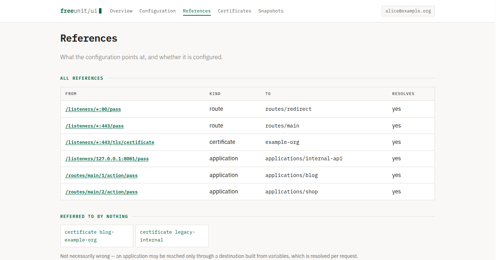

FreeUnit UI
A web interface for the FreeUnit control API, the community LTS fork of NGINX Unit.
Unit is configured entirely through a JSON REST API rather than config files, which makes
it excellent to automate and awkward to inspect. Every “nginx GUI” project out
there targets classic nginx config files, and none of them speak this API. FreeUnit UI
reads it directly: runtime status, the full configuration tree, and certificate expiry,
rendered as pages instead of curl output piped through jq.
- Apache‑2.0
- Python 3.11+
- Config writes: opt‑in

Before anything else
Read this before you install it
Writing FreeUnit configuration is equivalent to root. A configuration document can
define an application with an arbitrary executable and user,
so anything able to write config can run arbitrary code. Even read access exposes your
full server configuration, including which certificates and applications exist.
- This interface authenticates nobody. Put it behind something that does: a reverse proxy with client certificates, OIDC, or an SSO forward-auth endpoint. It can read the identity that proxy asserts, show it, record it against configuration changes, and refuse requests that arrive without one, but the proxy is what decides who gets in.
-
It binds to
127.0.0.1by default. Do not expose it directly to a network. - The process is privileged. Since FreeUnit 1.36.0 the UNIX control socket only accepts peers whose effective UID is root or the user unitd runs as, so this process must run as one of them. A compromise of this interface is therefore a compromise of unitd.
- There is no multi-user model, no per-user permissions and no audit log. With writes enabled, anyone who reaches this interface can reconfigure FreeUnit, which is equivalent to code execution on the host.
If you cannot keep it behind authentication and limited to trusted operators, do not deploy this.
Read-only is the default for that reason. With writes off the mutating routes are never registered, so there is no endpoint to reach, and the read path is built on a client class that has no write method on it at all. Writing needs a different client, which only the write views construct.
Configuring
Two ways in, and the guided one merges
Guided renders the members the bundled specification describes as typed inputs: text, numbers, true/false, and a menu where the value must be one of a set. Edit as JSON remains, and is how you reach everything else. The two modes link to each other from every configuration page.
The guided form never replaces a document, it merges into it. Objects, arrays, and members the specification has never heard of are carried across untouched and named in the interface. A schema that gains fields every release will eventually outrun any form built purely from types; the ones that replace the document lose what they don’t recognise, sooner or later.
A blank field removes an optional member; a required one is never removed, so the form cannot produce a document it already knows is invalid.

What the configuration points at
References shows what listeners and routes point at and whether it resolves: the class of mistake a schema can’t catch, since it lives in the document rather than its shape. Destinations built from request-time variables are reported as decided-per-request rather than broken.

Also
The rest of it
-
Configuration guidance
FreeUnit publishes an OpenAPI specification, and a copy is bundled here. Browsing shows what each member means, which are required, and their defaults and permitted values, resolved for the right application type since Python and PHP applications describe different shapes.
-
Checks that warn, never refuse
Missing required members, values outside a permitted set, members of the wrong type, and names the specification doesn’t recognise, each reported at a JSON Pointer the way unitd reports its own errors. A typo like
modulshows up twice, as a missingmoduleand an unrecognisedmodul.Findings warn and ask: an Apply anyway button, and a Check button to look before applying. It is guidance, not a gate.
-
Rails under every change
With writes on, every change follows the same sequence. The CSRF token is checked; the subtree is re-read and compared against what the form was built from, since the control API offers no
ETagand two operators could otherwise silently overwrite each other; the whole configuration is snapshotted, because the API has no undo; then the change is applied. -
Snapshots, and the diff
Taken automatically before every change, and comparable against the running configuration or against each other, so a change is readable and not merely reversible.
Snapshots are written
0600in a0700directory. -
Certificate bundles
Upload by file or paste, replacing an existing bundle under the same name; listeners referring to it pick up the new certificate with no configuration change at all.
Key material is never written to a snapshot and never echoed back into a form.
-
No JavaScript
None is served, which lets the Content-Security-Policy be
default-src 'none'with noscript-srcallowance at all. Responses carryCache-Control: no-store, since pages contain server configuration.
Deploying
FreeUnit serves it, nginx guards it
The supported shape is FreeUnit serving this interface on a UNIX socket, with nginx in front doing the authentication.
Working configuration for both sides is in
deploy/,
and the
deployment
guide walks through it, including why the listener is a UNIX socket rather than a
port, and the failure mode of letting the server host the interface that configures it.
Quick start
Running it
Requirements
- Python 3.11 or newer
- FreeUnit or NGINX Unit with a reachable control socket
- FreeUnit 1.36.1 or newer for JSON Pointer error locations — older releases work, with less precise error reporting
From a checkout
Not published to a package index yet, so build it from one:
$ python -m venv .venv && . .venv/bin/activate
$ pip install -e .
$ FREEUNIT_UI_CONTROL=/run/freeunit.sock freeunit-ui
Then open http://127.0.0.1:8099/. freeunit-ui runs
Flask’s development server: fine for a look around, not for anything else.
Distributions differ on the socket path — /run/freeunit.sock here,
while upstream packages commonly use /var/run/control.unit.sock.
No FreeUnit instance handy
There is no hosted demo of this, and there will not be one. It authenticates nobody and has to run as root or as the user unitd runs as, so a public instance is a bad idea in a way no amount of sandboxing fixes. The demo harness runs the whole interface locally against a fake control API instead:
$ python tools/demo.py --writes --user alice@example.org
Realistic data — an application in each of three languages, a certificate expiring
soon, one already expired — on the same http://127.0.0.1:8099/.
Enabling configuration editing
$ export FREEUNIT_UI_ENABLE_WRITES=true
$ export FREEUNIT_UI_SECRET_KEY="$(python -c 'import secrets; print(secrets.token_urlsafe(48))')"The interface refuses to start with writes enabled and no key, rather than generating one. A generated key would appear to work and then silently break CSRF protection across workers and restarts.
Every setting is an environment variable prefixed FREEUNIT_UI_; the full
table is in the
README.
Scope
What this is and is not
In scope
Reading and presenting what the control API exposes, making expiry, misconfiguration, and runtime health legible, and editing configuration safely for operators who opt in.
Out of scope
Being a PaaS, deploying applications, managing the host, or wrapping
unitctl.